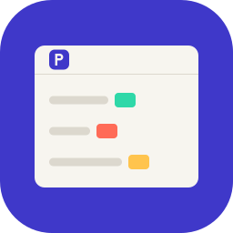

Polter
GitHub
让一个 Claude Code 会话去管另外几个。
macOS 与 Windows · MIT · 基于 Ghostty 的 fork · 不要账号，不要 API key
Put one Claude Code session in charge of the others.
macOS and Windows · MIT · a fork of Ghostty · no account, no API key
下载
Download
GitHub